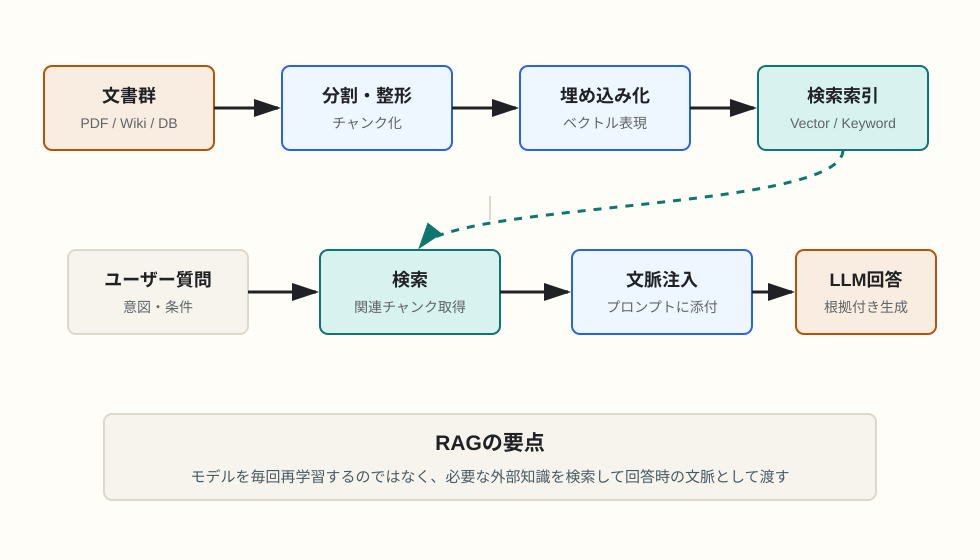

知識拡張
RAGによる知識の拡充はどのように行われているのか
RAGは、モデルの中身を毎回更新するのではなく、回答時に外部知識を検索して文脈として渡す手法です。LLMの言語能力と、検索システムの最新性・専門性を組み合わせます。
簡潔なQ&A
- Q. RAGによる知識の拡充はどのように行われるのか？
- A. 文書を小さな単位に分割し、検索しやすい形で索引化します。質問が来たら関連する文書片を検索し、その内容をプロンプトに添えてLLMに回答させます。
- Q. モデル自体が賢くなっているのか？
- A. 通常のRAGでは、モデルの重みは更新されません。外部知識をその場で参照させるため、回答できる範囲が実用上広がります。
- Q. 今後もこの手法は変わらないのか？
- A. 基本思想は残る可能性が高いですが、実装は変わります。単純なベクトル検索だけでなく、ハイブリッド検索、再ランキング、知識グラフ、エージェント型検索、長文コンテキストとの組み合わせが増えていきます。

RAGの基本構造
RAGはRetrieval-Augmented Generationの略で、日本語では検索拡張生成と訳されます。LLMが回答を生成する前に、外部の文書やデータベースから関連情報を取り出し、その情報を根拠として回答させる仕組みです。
LLMは事前学習で広い知識を持っていますが、社内文書、最新仕様、個別プロジェクトのコード、ユーザー固有のメモなどはモデルの中に入っていません。RAGは、その不足分を検索で補います。
知識拡充の流れ
1. 文書を集める
対象になる知識源は、PDF、Webページ、Notion、社内Wiki、ソースコード、FAQ、データベースなどです。まず、AIに参照させたい情報を収集します。
2. 文書を分割する
長い文書をそのまま検索対象にすると、必要な箇所を正確に取り出しにくくなります。そのため、章、段落、関数、見出しなどの単位で小さなチャンクに分割します。チャンクの切り方は回答品質に大きく影響します。
3. 検索用の索引を作る
各チャンクを検索できるようにします。代表的なのは、文章の意味を数値ベクトルに変換する埋め込み検索です。加えて、キーワード検索、メタデータ検索、日付や権限によるフィルタも使われます。
4. 質問に近い情報を取り出す
ユーザーの質問が来ると、その質問も検索用に変換され、関連度の高いチャンクが取得されます。取得した候補をさらに再ランキングして、本当に使うべき根拠を絞り込むこともあります。
5. 取得した情報をLLMに渡す
検索で得た文書片をプロンプトの一部としてLLMに渡します。LLMは、質問、会話履歴、検索結果、出力形式の指示を踏まえて回答を生成します。引用元や根拠を出す設計にすれば、回答の検証もしやすくなります。
RAGが解決する問題
- モデルの学習時点より新しい情報を扱える。
- 社内情報や個別プロジェクトの知識を回答に反映できる。
- 根拠文書を提示しやすく、回答の検証性が上がる。
- モデルを再学習するより低コストに知識を更新できる。
RAGの限界
RAGは万能ではありません。検索で必要な情報を取り逃がすと、LLMは正しい回答を作れません。また、似ているが違う文書を拾うと、もっともらしい誤答につながります。文書の鮮度、チャンク設計、検索クエリの作り方、再ランキング、プロンプト設計が品質を左右します。
さらに、取得した情報が多すぎると、LLMが重要な箇所を見落とすことがあります。検索で狭める力と、LLMに渡す文脈量のバランスが重要です。
今後もRAGは変わらないのか
「外部知識を参照して回答する」という発想は残る可能性が高いです。一方で、単純にベクトルDBから近い文書を取ってくるだけのRAGは、より高度な構成に置き換わっていきます。
- ベクトル検索とキーワード検索を組み合わせるハイブリッド検索。
- 取得候補を別モデルで並べ替える再ランキング。
- 文書だけでなく、構造化DBや知識グラフを参照する方式。
- AI Agentが複数回検索し、足りない情報を追加で調べる方式。
- 長文コンテキストモデルに大量の資料を直接渡す方式との併用。
要点
RAGは「モデルに知識を焼き込む」のではなく、「回答時に必要な知識を取りに行く」設計です。今後は検索、推論、ツール利用、長文コンテキストが組み合わさり、RAGという名前の中身はより広くなっていきます。